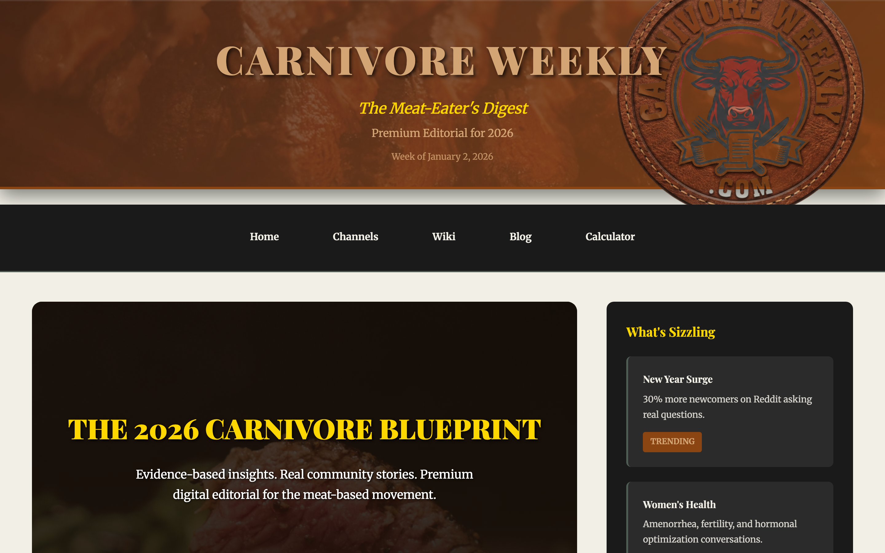
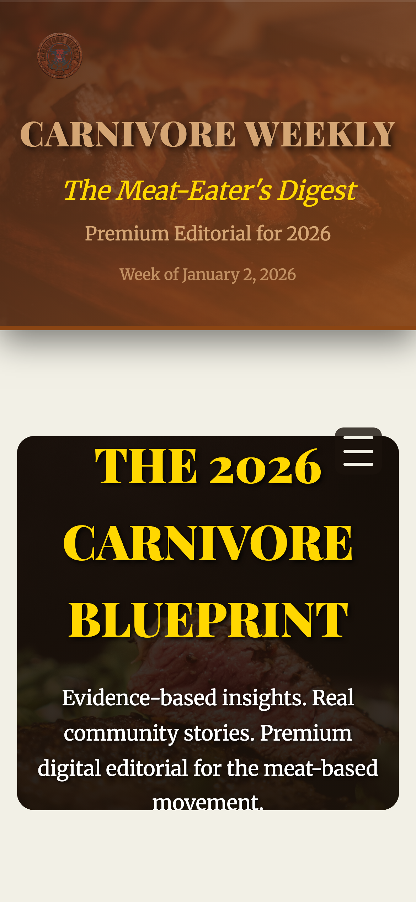

🔴 TL;DR - Critical State Assessment
Page Length
43 screens desktop / 73 screens mobile — UNSUSTAINABLE
Accessibility
234 small fonts + 118 tiny buttons — Major WCAG failures
Content Fragmentation
100 elements with 11+ major sections — User overwhelm
Verdict
Homepage structure needs comprehensive redesign, not tweaks
🚨 Homepage is Broken — Not Slightly Bad, Completely Broken
This is not a "nice to fix" situation. The homepage is fundamentally broken:
- 43 screens of scrolling means 95% of content is below the fold. Users won't see it.
- 234 unreadable fonts — Direct violation of WCAG accessibility standards
- 118 untappable buttons — Makes mobile interaction impossible for people with less precise motor control
- Content fragmentation — 11+ major sections suggest no clear information hierarchy or editorial strategy
- Trust killer — A 30-60 year old skeptical visitor will bounce immediately. This looks amateurish.
📊 Page Metrics Overview
43
Desktop Scroll Depth (screens)
73
Mobile Scroll Depth (screens)
234
Small Fonts (< 16px)
118
Tiny Buttons (< 44x44px)
100
Content Elements
11+
Major Sections
38.5k
Desktop Page Height (px)
60.7k
Mobile Page Height (px)
✅ What's Actually Working
- Header/nav system is solid and branded correctly
- Content variety shows editorial depth (hero, videos, community, products)
- Featured "Community Voice" section has good social proof potential
- Bento card system (community stories) is visually interesting
- Multiple CTAs (calculator, products, channels) show monetization intent
- Sidebar structure provides secondary navigation opportunity
🔴 Critical Issues (Must Fix Now)
Issue #1: Unsustainable Page Length (43 desktop / 73 mobile screens)
- 43 screens on desktop = Users give up and leave before seeing 95% of content
- 73 screens on mobile = Impossible scroll depth; mobile users see ~5% of homepage
- Repeat content sections (same cards appear 2-3 times) = Zero UX reasoning for duplication
Root Cause: Homepage is trying to be ALL sections at once (hero + roundup + videos + community + products + trending + more videos + FAQ). This is "kitchen sink" design and kills UX.
Issue #2: Massive Accessibility Failures
- 234 elements with font-size < 16px — Your target 30-60 demo cannot read this
- 118 clickable elements < 44x44px — WCAG AA violation. Mobile users can't tap.
- 41 elements on mobile with font < 14px — Unreadable on small screens
Impact: These are not "nice to have" improvements. They are legal/compliance failures. Older users, users with motor impairments, and mobile-only users cannot use this page.
Issue #3: Content Duplication & Confusion
- "Prime Cuts" (top videos) appears twice on the page
- "Community Voice" (testimonials) appears twice with same content
- "Butcher's Wisdom" (quotes) appears with both short and full versions
User Experience Impact: Visitor scrolls 20 screens, sees "Community Voice", scrolls 10 more screens, sees "Community Voice" again. Creates confusion: "Did I already see this? Am I in a loop?"
Issue #4: Information Hierarchy Collapse
Major sections on homepage (in order of appearance):
- Hero (2026 Blueprint)
- Weekly Roundup Summary
- Prime Cuts (Top Videos)
- Butcher's Wisdom (Quotes)
- Community Voice (Testimonials)
- Science Lab (FAQ)
- The Pantry (Products)
- CTA Section (Calculator)
- What's Sizzling (Trending Topics)
- Prime Cuts AGAIN (more videos)
- Butcher's Wisdom AGAIN (more quotes)
- Community Voice AGAIN (more testimonials)
- Must-Watch Content (recommended videos)
Problem: No clear priority. Is it blogs? Videos? Products? Community stories? The visitor can't tell. Every section gets equal visual weight, so nothing feels important.
🎨 Bento Layout Assessment
Current Implementation
The homepage uses multiple bento grid patterns:
| Section | Pattern | Issues |
|---|---|---|
| Community Voice | Featured + tall + wide cards | Appears twice; good design but repetition kills impact |
| Prime Cuts (Videos) | 2-column video grid | Appears 2-3 times; inconsistent sizing; some videos 1042px tall (!) |
| Butcher's Wisdom | 2-column insight cards | Works okay, but appears multiple times creating visual fatigue |
| Products (Pantry) | 2-column product cards | Good design; only appears once (correct) |
| Trending Topics | Single-column topic cards | Too narrow; stretches full width inefficiently |
Bento Design Issues
- No master visual hierarchy — All cards treated as equal visual weight
- Inconsistent sizing — Video cards range from 229px to 1042px tall (?!)
- Repetition over curation — Same sections appear 2-3 times instead of featured content
- Mobile collapse broken — 73-screen scroll suggests grid doesn't adapt for mobile
- No featured/hero card principle — Everything gets same emphasis
📦 Content Breakdown
What's actually on the homepage (100 total elements):
Header/Nav: Logo, navigation menu, premium CTA
Hero Section: 2026 Blueprint with CTA
Weekly Roundup: Summary of latest content
Prime Cuts (Videos): Top videos section — Appears at least 2x with different content
Butcher's Wisdom: Curated insights/quotes — Appears 2x
Community Voice: Transformation stories/testimonials — Appears 2x (has featured, tall, and wide cards)
Science Lab: FAQ section
The Pantry: 4 product cards (cast iron, electrolytes, meat sources, tools)
CTA Section: "Start Your 2026 Protocol" with calculator link
What's Sizzling: 6 trending topic cards
Must-Watch Content: Recommended videos section
Sidebar: "What's Trending", CTA, partner spotlight, feedback form, navigation links
Footer: Copyright, links
🤝 Trust & Psychology Analysis
Current Trust Signals ✅
- Community Voice section shows real people, real results (transformation stories)
- Named content creators/authors visible in video cards
- "Evidence-based content" messaging in footer
- Multiple sections (FAQ, testimonials, videos) suggest depth
- Partner spotlight (ButcherBox) shows brand alignment
Critical Trust Gaps ⚠️
- No clear mission statement above fold — "Who are you and why should I trust you?"
- No founder/team bios visible — Skeptics want to know WHO is behind this
- No subscriber/community size metrics — Social proof is missing ("100K+ readers", etc)
- Community Voice cards lack author credentials — Just names and stories, no expertise validation
- Products section lacks social proof — No ratings, no "bestselling", no social proof
- No "About Us" CTA above fold — Visitors can't easily find credibility info
For Your Audience: Contrarian health audiences are deeply skeptical. They're thinking: "Is this a money grab? Am I being sold to? Who are these people?" The homepage doesn't answer these questions at all — it just dumps content on them.
📸 Visual Comparison
Desktop - Above Fold
Mobile - Above Fold
Desktop - Full Page (38.5k px!)

Mobile - Full Page (60.7k px!)

♿ WCAG Accessibility Compliance
| Standard | Required | Current | Status |
|---|---|---|---|
| Min body font (desktop) | 16px | 12-14px (234 elements) | ❌ FAIL |
| Min body font (mobile) | 14px | 12px (41 elements) | ❌ FAIL |
| Touch target size | 44×44px | 30-36px (118 elements) | ❌ FAIL |
| Color contrast (text) | 4.5:1 | Unknown | ⚠️ CHECK |
| Line height | 1.5+ | Unknown | ⚠️ CHECK |
| Responsive layout | Mobile optimized | 73-screen scroll | ❌ FAIL |
Legal/Compliance Risk
These are not "best practice" violations. They are WCAG AA failures:
- Font size violations: 275 instances of text too small to read
- Touch target violations: 118 buttons/links impossible to tap on mobile
- Responsive design failure: 73-screen scroll on mobile is not acceptable
Recommendation: Document these findings and prioritize fixes as accessibility compliance issues, not UX improvements.
🎯 Priority Action Plan
PHASE 1: Emergency Fixes (1-2 weeks, required)
- Increase all body text to 16px minimum (18px preferred) — Fixes 234 accessibility issues immediately. Use CSS global font-size increase.
- Make all buttons and links 44×44px or larger — Add padding to reach 44px. This affects 118 elements. Required for WCAG compliance.
- REMOVE duplicate sections — Delete the second instance of "Prime Cuts", "Community Voice", "Butcher's Wisdom". Keep only first occurrence of each.
- Reduce page length target to 5-6 screens desktop, 8-10 mobile — Current 43/73 is unsustainable. This requires content prioritization.
PHASE 2: Structure Redesign (2-3 weeks, high priority)
- Create clear information hierarchy — Decide: Is this a blog? Video hub? Community? Product store? Choose ONE primary focus, make others secondary.
- Redesign homepage sections with purpose:
- Above Fold: Hero + ONE key CTA (calculator or blog)
- Section 2: Weekly highlights/trending (3 cards max)
- Section 3: Community Voice (3 featured testimonials with credentials)
- Section 4: Video content (3 top videos only, not 20+)
- Section 5: Products or secondary CTA
- Footer: Links + newsletter signup
- Add trust signals above fold — "Trusted by 50K+ readers", founder bio, mission statement
- Optimize mobile layout — Implement responsive grid that collapses to 1-column without creating 70+ screen scroll
PHASE 3: Enhancement (1-2 weeks, medium priority)
- Add author credentials to testimonials — Show credentials, results, expertise for community voice cards
- Create featured post logic — Latest or most popular blog post gets hero treatment
- Implement sidebar properly — Right sidebar shows secondary CTAs, newsletter, resources (currently it's lost in scroll)
- Add product ratings/reviews — Social proof for Pantry section
📊 Homepage vs. Blog Page Comparison
| Metric | Homepage | Blog Page | Status |
|---|---|---|---|
| Desktop scroll depth | 43 screens | 3 screens | Homepage is 14x longer 🚨 |
| Small fonts (<16px) | 234 | 53 | Homepage is 4x worse |
| Tiny buttons (<44x44px) | 118 | 24 | Homepage is 5x worse |
| Content elements | 100 | 26 | Homepage is 4x more complex |
| Major sections | 11+ | 1 (blog grid) | Homepage is much more fragmented |
| Duplicate content | Yes (3 sections repeat) | No | Homepage has significant redundancy |
Insight: The homepage is roughly 4-14x worse than the blog page across all metrics. This suggests systemic issues with how the homepage was designed/structured, not just minor tweaks needed.
🗺️ Implementation Roadmap
Week 1: Emergency Fixes (Accessibility + Content Cleanup)
- Increase global font size: 12-14px → 16px (affects 234 elements)
- Add padding to buttons: Reach 44×44px minimum (affects 118 elements)
- Remove duplicate "Prime Cuts" section (second occurrence)
- Remove duplicate "Community Voice" section (second occurrence)
- Remove duplicate "Butcher's Wisdom" section (second occurrence)
- Measure impact on scroll depth (target: reduce to ~25 screens desktop)
Week 2-3: Structure Redesign
- Map out new information architecture (decide primary vs secondary content)
- Design new homepage layout with 5-6 sections max
- Implement responsive grid for mobile (target: 8-10 screens mobile)
- Add trust signals (subscriber count, founder bio, mission statement)
- Create new hero section with clear primary CTA
Week 4: Enhancement & Testing
- Add author credentials to testimonials
- Implement featured post logic
- Test accessibility with screen readers (NVDA, VoiceOver)
- Test with 50+ year old users (your target demographic)
- Measure engagement metrics (bounce rate, scroll depth, time on page)
📋 Executive Summary
This is Not a Refinement — This is a Redesign
The homepage is structurally broken. It's not about making small improvements; it requires a comprehensive redesign.
Key Stats:
- 43 screens of scrolling (vs. 3 for blog, 5-6 industry standard)
- 275+ accessibility violations (font + button sizing)
- 3 major sections repeated (Prime Cuts, Community Voice, Butcher's Wisdom)
- 11+ sections with no clear hierarchy (everything looks equally important)
- No trust signals above fold (mission, team, social proof all below the fold)
Recommended Approach
- Week 1: Fix accessibility + remove duplicates (essential, quick wins)
- Week 2-3: Redesign information architecture (reduce sections, clarify hierarchy)
- Week 4: Add trust signals and test with users
- Ongoing: Monitor scroll depth, bounce rate, time on page
Success Metrics
- Reduce desktop scroll depth from 43 → 5-6 screens
- Reduce mobile scroll depth from 73 → 8-10 screens
- Eliminate all accessibility violations (font size, button sizing)
- Improve mobile engagement (lower bounce rate, higher scroll depth %)
- Increase click-through to primary CTA (calculator, blog, or signup)
Bottom Line: The homepage needs a structural overhaul. The good news: Once you reduce the content, increase font sizes, and fix buttons, the remaining 5-6 sections can be really strong. The bento grid system can work beautifully — it's just buried under too much content right now.